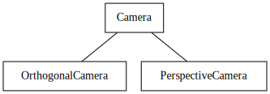
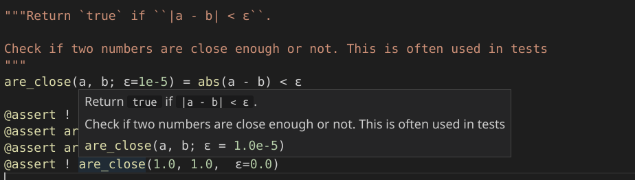
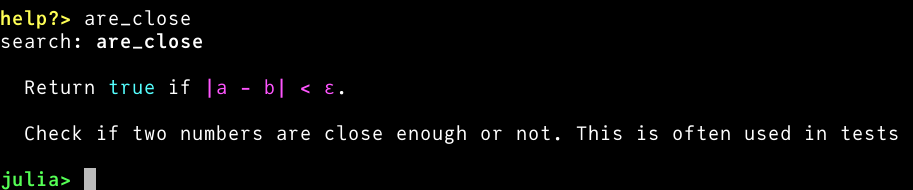

Esercitazione 8
Documentare funzioni
Maurizio Tomasi maurizio.tomasi@unimi.it
Documentazione
Il problema
Sinora abbiamo implementato codice, ma a parte la scrittura del
README.mdnon abbiamo impegnato energie per la stesura della documentazione.Si pensa spesso che la documentazione sia utile per l’utente finale, ma non per chi sviluppa il programma…
…ma non c’è nulla di più sbagliato!
L’affermazione sopra è più comprensibile se si è reduci da settimane di lavoro in cui non si è avuta a disposizione la documentazione!
Tipi di documentazione
- README
- L’abbiamo trattato nella lezione 4.
- Tutorial
- Serve all’utente per comprendere come iniziare ad usare il programma.
- Manuale dell’utente
- È il manuale di riferimento, che l’utente dovrebbe consultare ogni volta che ha un dubbio. Non è necessario che sia leggibile capitolo dopo capitolo.
- API documentation
- Avevamo parlato delle API nella lezione 3: sono l’insieme dei prototipi delle classi/metodi/funzioni implementati in una libreria che sono invocabili dall’utente.
API documentation
Docstrings
L’esempio precedente mostrava che in Kotlin è possibile associare la documentazione di una classe/funzione/metodo usando dei commenti formattati in un modo appropriato.
L’uso di commenti per documentare il codice è comune a molti altri linguaggi, come C++, C# e Java.
Per alcuni linguaggi (Python, Julia, Common LISP…) la documentazione va invece scritta all’interno di stringhe, nel qual caso si parla di docstrings:
| Linguaggio | Tipo |
|---|---|
| Python | Stringa dentro la classe/funzione |
| C++ | Commento fuori dalla classe/funzione |
| Julia | Stringa fuori dalla classe/funzione |
| C# | Commento fuori dalla classe/funzione |
| Kotlin | Commento fuori dalla classe/funzione |
Sintassi
L’API documentation va scritta in un linguaggio di markup adeguato; solitamente è Markdown (che avevamo spiegato nella lezione 4), ma non è sempre vero purtroppo.
L’API documentation viene di solito interpretata da programmi che la estraggono e generano un PDF/webpage in cui sono raccolte tutte le descrizioni.
Per capire come scrivere la documentazione di classi e funzioni è quindi necessario fare riferimento alla guida di questi programmi.
Come scrivere documentazione
Scrivere buona documentazione non è semplice!
E, diciamocelo, è anche abbastanza noioso!
Un metodo efficace per produrre documentazione è scriverla in maniera graduale, tutte le volte che si hanno dubbi sul modo in cui si deve usare una classe/funzione/metodo.
Non è necessario scrivere un lungo testo per una funzione, basta scrivere il minimo indispensabile perché sia utile!
Documentazione utile
Esempi di domande a cui può rispondere della buona documentazione:
Non ricordate più come si invoca la funzione che scrive un tipo
HdrImagein un file PFM.Non ricordate più se i campi del tipo
Colorsi chiaminor/g/bored/green/blue.Non ricordate più se in un’immagine
HdrImageil punto(0, 0)sia quello in basso a sinistra o quello in alto a sinistra.
Queste sono alcune delle tipiche domande che possono venire a voi stessi quando scrivete nuovo codice.
Documentazione inutile
Una documentazione come la seguente è inutile:
perché è impossibile avere dubbi su quello che fa questo codice:
Capire quando un commento è utile è un’arte che si impara col tempo!
Informazioni importanti
Queste sono alcune delle informazioni che di solito servono di più:
Nomi dei campi di una classe/struttura (
r/g/bored/green/blue?);Unità di misura dei parametri e del tipo di ritorno di una funzione (
angleè in gradi o radianti?);Assunzioni sui parametri di input (
xè positivo,yè un numero minore di 4, etc.);Casi in cui è meglio invocare un’altra funzione (
Vec.squaredNormanzichéVec.norm).
Codice da implementare
Nuovi tipi
Oggi implementeremo tre tipi molto semplici:
- Il tipo
Rayrappresenta un raggio di luce; - Il tipo
Camerarappresenta l’osservatore/telecamera; - Il tipo
ImageTracerinvia raggi dall’osservatore allo schermo.
- Il tipo
Il tipo
Raydeve essere molto efficiente, quindi è meglio che sia un value type (quindi:structin C# e Julia).I tipi
CameraeImageTracernon sono critici, e non serve che siano particolarmente ottimizzati.
La classe Ray
Deve contenere i campi seguenti:
origin: oggetto di tipoPoint(origine del raggio);dir: oggetto di tipoVec(direzione del raggio);tmin: numero floating-point (distanza minima);tmax: numero floating-point (distanza massima);depth: intero.
Potete fare in modo che gli ultimi tre campi abbiano come valori di default
tmin = 1e-5,tmax = +∞,depth = 0.Definite un metodo
atche calcoli un punto lungo il raggio per un dato t, e un metodois_closeche verifichi se due raggi hannooriginedirsimili.
Implementazione di Ray
@dataclass
class Ray:
origin: Point = Point()
dir: Vec = Vec()
tmin: float = 1e-5
tmax: float = 1e+10
depth: int = 0
def is_close(self, other: Ray, epsilon=1e-5):
return (self.origin.is_close(other.origin, epsilon=epsilon) and
self.dir.is_close(other.dir, epsilon=epsilon))
def at(self, t):
return self.origin + self.dir * tTest per Ray
class TestRays(unittest.TestCase):
def test_is_close(self):
ray1 = Ray(origin=Point(1.0, 2.0, 3.0), dir=Vec(5.0, 4.0, -1.0))
ray2 = Ray(origin=Point(1.0, 2.0, 3.0), dir=Vec(5.0, 4.0, -1.0))
ray3 = Ray(origin=Point(5.0, 1.0, 4.0), dir=Vec(3.0, 9.0, 4.0))
assert ray1.is_close(ray2)
assert not ray1.is_close(ray3)
def test_at(self):
ray = Ray(origin=Point(1.0, 2.0, 4.0), dir=Vec(4.0, 2.0, 1.0))
assert ray.at(0.0).is_close(ray.origin)
assert ray.at(1.0).is_close(Point(5.0, 4.0, 5.0))
assert ray.at(2.0).is_close(Point(9.0, 6.0, 6.0))Le classi *Camera
In linguaggi che implementano l’ereditarietà,
Camerasarà il tipo da cui sono derivati i nuovi tipiOrthographicCameraePerspectiveCamera.Dovremo implementare la seguente gerarchia di tipi:

Per le due proiezioni (ortografica e prospettica) useremo un sistema di riferimento rigido e molto semplice.
P = (-d, 0, 0),\ \vec d = (d, 0, 0),\ \vec u = (0, 0, 1), \vec r = (-a, 0, 0).
Orientare Camera
Gli unici parametri aggiustabili di
Camerasonod(distanza schermo-osservatore) ea(aspect ratio dell’immagine).Il sistema di riferimento della slide precedente è rigido: è quindi molto facile da implementare, perché non serve memorizzare i vettori \vec d, \vec u e \vec v.
Per orientare una
Camera, possiamo usare il tipoTransformationche abbiamo implementato settimana scorsa.Sugli oggetti di tipo
*Cameradeve essere possibile invocare un metodofire_rayche accetta in input una coordinata (u, v) e restituisce un oggettoRay.
Trasformazioni
Se associamo una trasformazione T all’osservatore, potremmo applicarla ai vettori che definiscono l’osservatore, ossia \vec d, \vec u e \vec r, e spostare/orientare l’osservatore.
Ma così è complicato calcolare le direzioni dei raggi che attraversano lo schermo nella funzione
fire_ray!È meglio creare i raggi nel sistema di riferimento originale, e poi applicare la trasformazione al raggio: è più semplice e si fanno meno calcoli.
Serve quindi implementare l’operatore
Transformation * Ray, che applicherà la trasformazione T sia a O (origine) che a \vec d (direzione del raggio).
Trasformare Ray
Questa è l’applicazione di una trasformazione a un raggio; potreste in alternativa ridefinire l’operatore
*nel casoTransform * Ray:Non è necessario trasformare
tminetmax.
Test per transform
def test_transform():
ray = Ray(origin=Point(1.0, 2.0, 3.0), dir=Vec(6.0, 5.0, 4.0))
transformation = translation(Vec(10.0, 11.0, 12.0)) * rotation_x(90.0)
transformed = ray.transform(transformation)
assert transformed.origin.is_close(Point(11.0, 8.0, 14.0))
assert transformed.dir.is_close(Vec(6.0, -4.0, 5.0))Tipi di proiezioni

Coordinate dello schermo
Per evitare confusione tra coordinate spaziali (x, y, z) e coordinate 2D dello schermo, useremo le lettere (u, v) per indicare punti dello schermo.
Il sistema di riferimento è il seguente:


OrthogonalCamera
Per costruirla serve il parametro
aspect_ratio(un floating point, o un razionale come16//9in Julia) etransformation.Questa è una possibile implementazione in Python:
class OrthogonalCamera(Camera): def __init__(self, aspect_ratio=1.0, transformation=Transformation()): self.aspect_ratio = aspect_ratio self.transformation = transformation def fire_ray(self, u, v): origin = Point(-1.0, (1.0 - 2 * u) * self.aspect_ratio, 2 * v - 1) direction = VEC_X return Ray(origin=origin, dir=direction, tmin=1.0).transform(self.transformation)
Test per l’osservatore
È importante verificare che i quattro angoli dell’immagine siano proiettati in modo corretto. Scegliamo anche un aspect ratio diverso da 1.
Per
OrthogonalCameraverifichiamo che i raggi siano paralleli tra loro: lo facciamo calcolandone il prodotto scalare e verificando che coincida col vettore nullo.Per
PerspectiveCameraverifichiamo invece che tutti i raggi abbiano la medesima origine.
Test per OrthogonalCamera
def test_orthogonal_camera(self):
cam = OrthogonalCamera(aspect_ratio=2.0)
ray1 = cam.fire_ray(0.0, 0.0)
ray2 = cam.fire_ray(1.0, 0.0)
ray3 = cam.fire_ray(0.0, 1.0)
ray4 = cam.fire_ray(1.0, 1.0)
# Verify that the rays are parallel by verifying that cross-products vanish
assert are_close(0.0, ray1.dir.cross(ray2.dir).squared_norm())
assert are_close(0.0, ray1.dir.cross(ray3.dir).squared_norm())
assert are_close(0.0, ray1.dir.cross(ray4.dir).squared_norm())
# Verify that the ray hitting the corners have the right coordinates
assert ray1.at(1.0).is_close(Point(0.0, 2.0, -1.0))
assert ray2.at(1.0).is_close(Point(0.0, -2.0, -1.0))
assert ray3.at(1.0).is_close(Point(0.0, 2.0, 1.0))
assert ray4.at(1.0).is_close(Point(0.0, -2.0, 1.0))Test per l’osservatore
Verifichiamo anche l’applicazione di una trasformazione:
Per
PerspectiveCamerail test sarà molto simile.
PerspectiveCamera
Oltre all’aspect ratio e alla trasformazione, la proiezione prospettica richiede anche la distanza d tra lo schermo e l’osservatore.
Questa è l’implementazione in Python:
class PerspectiveCamera(Camera): def __init__(self, distance=1.0, aspect_ratio=1.0, transformation=Transformation()): self.distance = distance self.aspect_ratio = aspect_ratio self.transformation = transformation def fire_ray(self, u, v): origin = Point(-self.distance, 0.0, 0.0) direction = Vec(self.distance, (1.0 - 2 * u) * self.aspect_ratio, 2 * v - 1) return Ray(origin=origin, dir=direction, tmin=1.0).transform(self.transformation)
Test per PerspectiveCamera
def test_perspective_camera(self):
cam = PerspectiveCamera(screen_distance=1.0, aspect_ratio=2.0)
ray1 = cam.fire_ray(0.0, 0.0)
ray2 = cam.fire_ray(1.0, 0.0)
ray3 = cam.fire_ray(0.0, 1.0)
ray4 = cam.fire_ray(1.0, 1.0)
# Verify that all the rays depart from the same point
assert ray1.origin.is_close(ray2.origin)
assert ray1.origin.is_close(ray3.origin)
assert ray1.origin.is_close(ray4.origin)
# Verify that the ray hitting the corners have the right coordinates
assert ray1.at(1.0).is_close(Point(0.0, 2.0, -1.0))
assert ray2.at(1.0).is_close(Point(0.0, -2.0, -1.0))
assert ray3.at(1.0).is_close(Point(0.0, 2.0, 1.0))
assert ray4.at(1.0).is_close(Point(0.0, -2.0, 1.0))ImageTracer
Ci manca ora l’ultimo tassello: una funzionalità che leghi il tipo
HdrImagea uno dei tipi derivati daCamera.Il nuovo tipo
ImageTracersi occuperà di inviare raggi ai pixel corrispondenti in un’immagine, facendo la conversione tra l’indice(column, row)di un pixel usati daHdrImagee i valori(u, v)che usaCamera.Per comodità, definiamo due funzioni associate a
ImageTracer:- Una funzione
fire_rayche invia un raggio verso un pixel specificato; - Una funzione
fire_all_raysche itera su tutti i pixel dell’immagine la chiamata afire_ray.
- Una funzione
fire_ray
La funzione
fire_raydeve inviare un raggio verso un pixel dell’immagine.A parte convertire le coordinate dallo spazio
(u, v)allo spazio dei pixel, c’è il problema della superficie del pixel.Un pixel non è infatti un punto, perché ha una certa area: in quale punto all’interno del pixel deve passare il raggio?
Per il momento faremo passare il raggio nel centro del pixel, ma facciamo in modo che si possa specificare una posizione relativa tramite due coordinate
(u_pixel, v_pixel), simili alle coordinate(u, v)ma riferite alla superficie del pixel anziché dell’immagine.
fire_all_rays
Ma una volta che viene «lanciato» un raggio verso un pixel, la funzione
fire_all_rayscosa dovrebbe fare?Sappiamo che nel programma completo dovremo calcolare la soluzione dell’equazione del rendering, ma non siamo pronti a farlo!
Quello che possiamo fare è accettare come argomento di
fire_all_raysuna funzione: essa verrà invocata per ogni pixel/raggio dell’immagine e dovrà restituire un colore, ossia un oggetto di tipoColor.
ImageTracer in Python
class ImageTracer:
def __init__(self, image: HdrImage, camera: Camera):
self.image = image
self.camera = camera
def fire_ray(self, col: int, row: int, u_pixel=0.5, v_pixel=0.5):
u = (col + u_pixel) / (self.image.width - 1)
v = (row + v_pixel) / (self.image.height - 1)
return self.camera.fire_ray(u, v)
def fire_all_rays(self, func):
for row in range(self.image.height):
for col in range(self.image.width):
ray = self.fire_ray(col, row)
color = func(ray)
self.image.set_pixel(col, row, color)Test per ImageTracer
def test_image_tracer(self):
image = HdrImage(width=4, height=2)
camera = PerspectiveCamera(aspect_ratio=2)
tracer = ImageTracer(image=image, camera=camera)
ray1 = tracer.fire_ray(0, 0, u_pixel=2.5, v_pixel=1.5)
ray2 = tracer.fire_ray(2, 1, u_pixel=0.5, v_pixel=0.5)
assert ray1.is_close(ray2)
tracer.fire_all_rays(lambda ray: Color(1.0, 2.0, 3.0))
for row in range(image.height):
for col in range(image.width):
assert image.get_pixel(col, row) == Color(1.0, 2.0, 3.0)Link a Gather
Useremo il solito link: gather.town/app/CgOtJvyNfVKMIQ9e/LaboratorioRayTracing
Guida per l’esercitazione
Guida per l’esercitazione
Create un branch per il lavoro di oggi, che chiamerete
cameras.Implementate questi tipi:
Ray;Camera,OrthogonalCameraePerspectiveCamera;ImageTracer.
Implementate tutti i test. Quando avete terminato l’implementazione e i test passano con successo, chiudete il PR.
Documentazione
Iniziate ad inserire documentazione per le nuove classi che implementate oggi.
Aggiungete documentazione per quelle classi/funzioni/metodi delle lezioni passate che oggi vi capita di impiegare, e per cui il funzionamento non vi sembrava più così ovvio.
Questo dovrebbe essere un lavoro facile da distribuire tra le persone del gruppo.
Indicazioni per C++
Implementazione
Create una classe per
Camera, e derivate le due classiOrthogonalCameraePerspectiveCamera. Preoccupatevi che inCameraci siano le due funzioni virtuali purefire_ray;fire_all_rays.
Per passare a
fire_all_raysla funzione da chiamare su ciascun raggio, ci sono svariate soluzioni:- Usate un template (probabilmente l’opzione più efficiente);
- Passate un parametro
std::function; - Passate un puntatore a funzione.
Documentazione
In C++ il programma più usato per gestire la documentazione è Doxygen. Consultate la guida per imparare la sintassi, basata su Markdown.
Esempio di documentazione:
/** * Return `true` if the difference between `a` and `b` is less than `epsilon`. * * @param a The first number to compare * @param b The second number to compare * @param epsilon The maximum tolerance * @return A Boolean telling whether `a` and `b` are close or not. */ bool are_close(float a, float b, float epsilon = 1e-5) { … }
Esempio C++ in CLion
Indicazioni per Julia
Esempio Julia
Julia supporta nativamente le docstrings e il Markdown 😀
Per estrarre tutte le docstring da un package e pubblicarle su un sito esiste Documenter.jl.
Esempio di documentazione:
La documentazione è consultabile anche dalla REPL scrivendo
?are_close.
Esempio Julia
In Visual Studio Code:

Nella REPL:

Indicazioni per C#
Documentazione
Purtroppo il C# richiede che i commenti siano scritti in formato XML anziché in Markdown.
Esempio di documentazione:
Se usate Visual Studio Code e attivate dal menu «File | Settings…» l’opzione Format on type, digitando
///sopra un metodo o classe produrrà un template della documentazione. È molto comodo!
Indicazioni per Kotlin
Documentazione
I commenti di documentazione iniziano con
/**anziché/*, oppure con///anziché//.Il testo può essere scritto usando il linguaggio Markdown.
Esistono una serie di comandi che si possono impiegare nel testo. Iniziano tutti con
@(es.,@param,@return,@see), e sono documentati alla pagina Document Kotlin code.